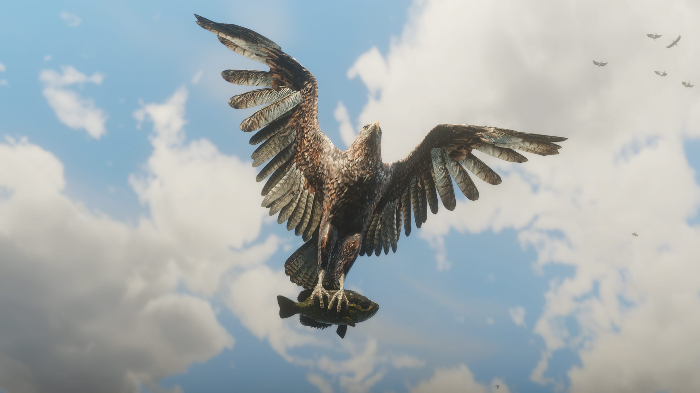
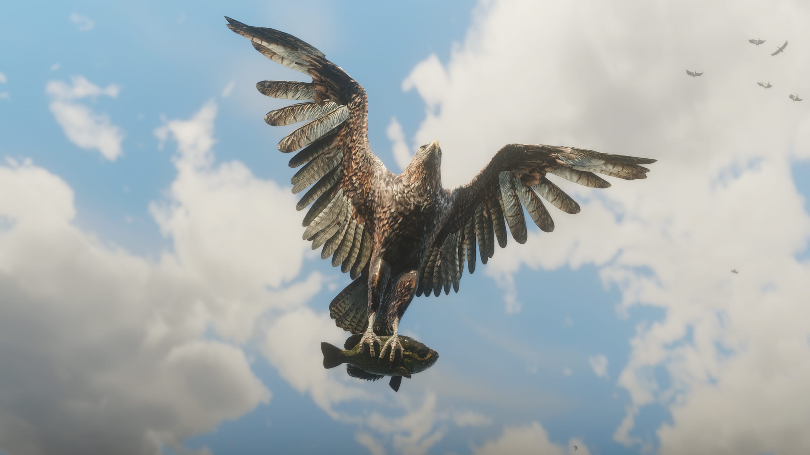

<野生动物>
《荒野大镖客2:救赎》中多样化的栖息环境和气候是大约 200 种野兽、鸟类和鱼的家园。它们在各自的环境中都有独特的行为习惯。
鹿、野牛和叉角羚在平原地带成群移动，食腐动物会不停搜寻腐肉，狼群会围攻猎物，大雁按固定编队飞行，负鼠会装死，啮齿动物会逃进树洞，受到威胁的灰熊会假装进攻，
猎食鸟类会在暖气流上飞翔。它们共同组成了一个复杂的生态系统，不断为了它们在食物链上的位置而战斗，这其中既包括人类也包括野兽，而且任何捕食者都有可能转眼变成猎物。
狩猎与钓鱼
狩猎和钓鱼是在野外生存的必备技能，它们可以为您提供食物、材料和收入来源。大量不同的鱼类在河流、湖泊和溪流中游弋，选择合适的鱼饵或拟饵是满载而归的秘诀。追踪动物需要专注和耐心，
小心移动并注意风向变化，不然您可能会惊动您的猎物。武器和射击位置的选择也很重要，因为它们会影响肉和皮毛的质量，从而也影响商人的收购出价。狩猎不同体型的动物时，要确保您选择了
正确的步枪规格，或者精通弓箭来实现安静的干净猎杀。
在一次成功的狩猎之后，您可以选择原地剥皮宰杀动物，或者完整地带走。不要把猎物留在地上太久，否则会有食腐动物慢慢接近。皮毛、动物材料、肉或者完整的动物尸
体可以通过马匹运输卖给城镇里的肉铺，或者带回营地为炖锅加料，还可以做成服饰或者其它物品。大自然的馈赠如此丰富，完全没有让人饥饿受冻的理由。

许多栖息地中都可以发现野味。如果您的第一枪没有一击致命，您的猎物会试图逃跑。跟着血迹等线索追踪猎物，您可能需要杀死动物来解除它们的痛苦。
合理地选择武器对于您的狩猎收获的质量和收益非常重要。弓箭通常是实现干净猎杀的理想选择。安静地靠近猎物，掩盖您的气味或者站在下风口可以让动物 发现您变得更难，然后呼唤动物来吸引它们的注意力，再来一个一击致命。
马匹
从阿帕卢萨马和阿拉伯马到夏尔马和美洲野马，Red Dead Redemption 2 中有 19 种马匹。每种马匹都有不同的个性特征。马匹可以在野外发现和捕获，也可以在马厩购买，或是用一些不光彩的办法取得。
您的马匹就是您形影不离的伙伴，您对它的依赖和您对帮派成员的依赖程度一样，所以照顾好它很重要。让马保持清洁和充足的营养，您将开始看到它在体力值、表现和掌控性上的提升，而且随着默契的增加，
它也会变得不容易受惊。您可以通过 59 种不同风格的毛色，以及大量自定义选项，例如马鞍、鞍头、马镫、马刺等等，来自定义完全属于您的马匹，增强这种独一无二的关系，一起探索世界。
动物图鉴


 



![]()